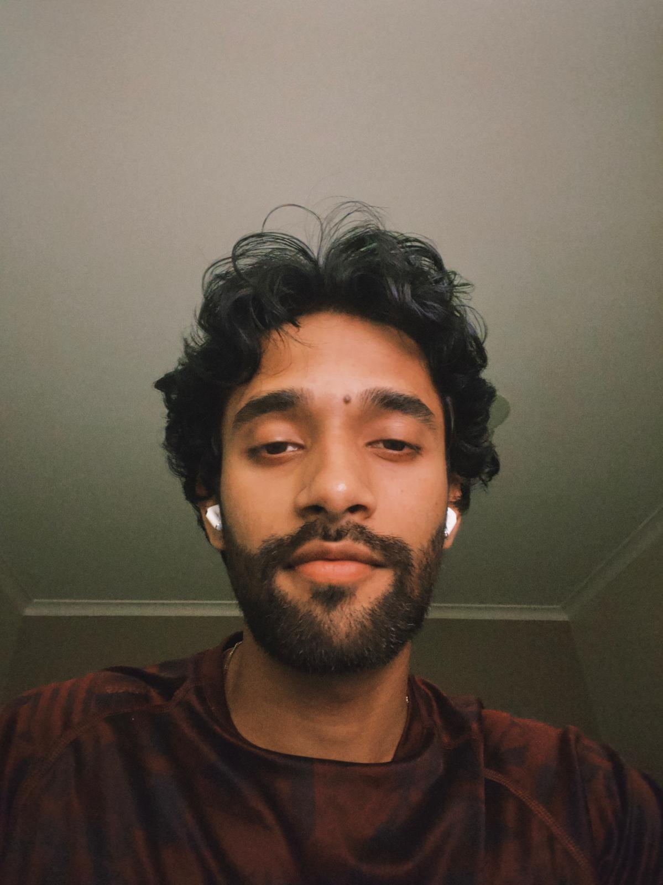

Hello there👋, I am Suraj, a Master's student at SJSU , based in San Francisco with a passion for tackling complex problems. Like any other true engineer, I thrive on building solutions, leveraging the power of AI to do it smarter and faster.